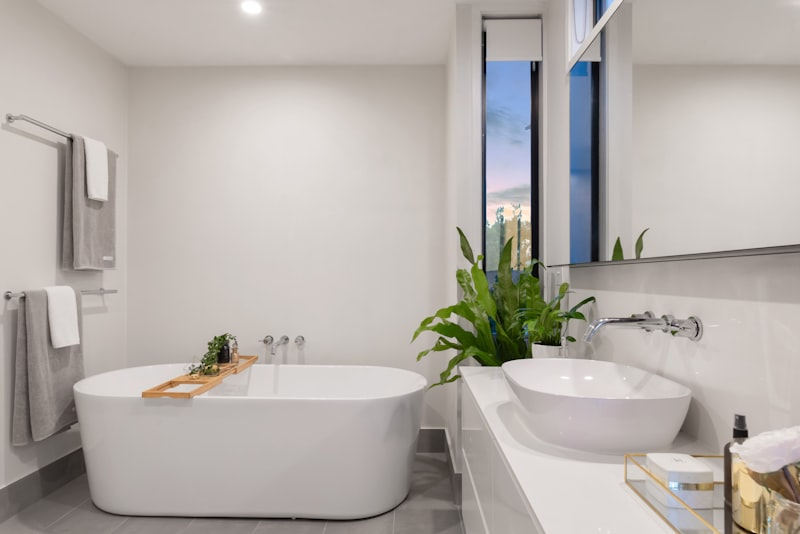

Секреты хранения вещей в ванной комнате

Ванная комната — одно из самых маленьких помещений в доме, но при этом здесь нужно хранить множество вещей: косметику, средства гигиены, полотенца, бытовую химию. Как организовать пространство так, чтобы всё было под рукой, но при этом не создавалось ощущение захламлённости?
В этой статье собрали проверенные решения и лайфхаки, которыми делятся участницы нашего сообщества. Здесь нет дорогих дизайнерских проектов — только практичные идеи, которые реально работают!
Основные принципы организации хранения
1. Используйте вертикальное пространство
В маленькой ванной каждый сантиметр на счёту. Вместо того чтобы занимать пол, задействуйте стены:
- Навесные шкафчики — разместите их над раковиной, унитазом или стиральной машиной
- Открытые полки — для красивых банок, растений и полотенец
- Рейлинги с крючками — для халатов, полотенец, мочалок
- Угловые полки — используют мёртвые зоны
2. Сортируйте по зонам и частоте использования
Разделите вещи на категории:
- Ежедневное — на уровне глаз и вытянутой руки (зубные щётки, крем для лица, расчёска)
- Регулярное — в шкафчиках на средней высоте (шампуни, гели, косметика)
- Редкое — на верхних полках или в нижних ящиках (запасы, сезонные вещи, лекарства)
3. Группируйте по категориям
Храните похожие вещи вместе — это экономит время на поиск:
- Косметика для лица — отдельно от косметики для тела
- Средства для волос — в одной корзине
- Бритвы, пилочки, маникюрные принадлежности — в отдельном контейнере
- Детские средства — в своей зоне
15 умных решений для хранения
1. Органайзеры и корзины
Для чего: Группировка мелочей, визуальный порядок
Где использовать:
- Пластиковые контейнеры в шкафчиках — для косметики, кремов, лекарств
- Плетёные корзины на полках — для полотенец, туалетной бумаги
- Прозрачные органайзеры — видно содержимое, не нужно открывать
💬 Как вы организуете хранение?
В нашем клубе участницы делятся фотографиями своих решений, рассказывают об удачных покупках и лайфхаках. Вдохновляйтесь реальными примерами!
Посмотреть идеи →2. Магнитная лента или держатель
Для чего: Хранение металлических инструментов
Примеры:
- Пинцеты, ножницы, щипцы для завивки
- Заколки, невидимки
- Бритвенные станки
Прикрепите магнитную ленту на внутреннюю сторону дверцы шкафчика — освободите место в ящиках!
3. Дозаторы вместо бутылок
Плюсы:
- Эстетичный вид (вместо разношёрстных упаковок)
- Экономия места (дозаторы можно закрепить на стене)
- Удобство использования одной рукой
Что переливать: Жидкое мыло, шампунь, гель для душа, лосьон для тела
4. Полки над унитазом
Это пространство часто пустует, хотя там можно разместить:
- Запасы туалетной бумаги
- Полотенца
- Корзину с журналами
- Освежители воздуха
Совет: Используйте закрытые шкафчики или корзины, чтобы не создавать визуальный шум.
5. Выдвижные ящики вместо распашных дверок
Если планируете мебель для ванной — выбирайте тумбы с выдвижными ящиками:
- Видно всё содержимое сразу (не нужно вытаскивать вещи из глубины)
- Удобнее доставать нужное
- Можно установить разделители для порядка
6. Корзина для грязного белья
Важно: Корзина должна быть с отверстиями для циркуляции воздуха, иначе бельё задохнётся и будет пахнуть.
Варианты размещения:
- Встроенная корзина в тумбе под раковиной
- Подвесная корзина на дверце шкафа
- Напольная плетёная корзина (если позволяет место)
7. Крючки везде!
Самый бюджетный способ добавить места для хранения:
- На задней стороне двери — для халатов, полотенец
- На стене у душа — для мочалок, щёток
- Внутри шкафчиков — для фена, щипцов, бритвы
Выбирайте: Самоклеящиеся крючки (если не хотите сверлить) или хромированные на шурупах (надёжнее).
8. Угловые полки в душевой кабине
Используйте углы душа для хранения:
- Телескопические стойки — от пола до потолка, несколько ярусов
- Навесные угловые полки — на присосках (для лёгких флаконов)
- Встроенные ниши — если делаете ремонт, запланируйте заранее
9. Подвесные органайзеры на рейлинг для душа
Удобный вариант для съёмного жилья или если не хотите сверлить стены:
- Корзины из нержавейки
- Пластиковые контейнеры с крючками
- Сетки для мочалок и губок
10. Узкий выдвижной стеллаж
Идеально для щели между стиральной машиной и стеной (15-25 см):
- На колёсиках — легко выдвигается
- Несколько полок (3-5)
- Высотой до потолка — максимум пространства
Что хранить: Бытовую химию, губки, тряпки, освежители.
11. Органайзеры для ящиков
Разделители превращают хаос в порядок:
- Секции для косметики (помады, тушь, пудра)
- Отделения для расчёсок, заколок
- Ячейки для бритв, триммеров
Лайфхак: Используйте коробки из-под обуви, обклеенные красивой бумагой — бесплатный органайзер готов!
12. Зеркальный шкаф вместо обычного зеркала
Два в одном: зеркало + место для хранения.
Что туда помещается:
- Косметика для ежедневного использования
- Зубные щётки и паста
- Лекарства первой необходимости
- Бритвы, пинцеты, ножницы
13. Полотенцесушитель с полками
Современные модели — это не только сушка, но и дополнительное хранение:
- Верхние полки для сложенных полотенец
- Крючки по бокам для халатов
- Перекладины для мокрых полотенец
14. Хранение под ванной
Если у вас обычная ванна (не на ножках), используйте пространство под ней:
- Экран с раздвижными дверцами — доступ к вещам, но скрыты от глаз
- Выдвижные ящики — удобнее доставать
- Корзины на колёсах — легко выкатить для уборки
Что хранить: Запасы бытовой химии, средства для уборки, редко используемые вещи.
15. Многоуровневые лотки и подставки
Создают дополнительный ярус в шкафчике:
- Ступенчатые полки для флаконов — видно все этикетки
- Вращающиеся подставки (lazy susan) — удобно доставать из глубины
- Навесные полочки на дверцу шкафа — используют мёртвое пространство
🛠️ Нужен совет по организации?
В клубе участницы помогут подобрать решение под вашу ванную, поделятся ссылками на удачные покупки и расскажут о своих ошибках. Получите персональные рекомендации!
Задать вопрос →Частые ошибки в организации хранения
1. Слишком много открытых полок
Проблема: Пыль, влага, визуальный беспорядок.
Решение: Баланс 70% закрытого хранения / 30% открытого. На открытых полках — только красивые банки, растения, свёрнутые полотенца.
2. Хранение всего под раковиной
Проблема: Сложно достать что-то из глубины, влажность портит упаковки.
Решение: Используйте выдвижные ящики или корзины. Храните там только то, что не боится влаги.
3. Игнорирование вертикального пространства
Проблема: Всё пытаются впихнуть на уровне рук, а стены пустуют.
Решение: Навесные шкафчики, полки, крючки — задействуйте стены на всю высоту!
4. Хранение пустых упаковок «на всякий случай»
Проблема: Занимают место, создают беспорядок.
Решение: Безжалостно выбрасывайте пустые флаконы. Если средство закончилось — купите новое или обойдитесь без него.
5. Отсутствие системы
Проблема: Вещи разбросаны хаотично, каждый раз нужно искать.
Решение: Заведите правило: каждая вещь на своём месте. Используйте маркировку на контейнерах, если нужно.
Лайфхаки для маленькой ванной
- Лестница-полотенцесушитель: Декоративная лестница у стены — на перекладинах сохнут полотенца
- Карманы на шторке для душа: Прозрачные кармашки для шампуней, мочалок
- Полка над дверью: Мёртвая зона, которую редко используют
- Магнитная планка для мелочей: На стену рядом с зеркалом — для пинцетов, ножниц
- Подвесная корзина для игрушек: Если есть дети — игрушки для ванной в сетке на присосках
Организация по категориям: примеры
Зона умывальника
- Зеркальный шкафчик: зубные щётки, паста, средства для лица, дезодорант
- Ящик под раковиной: запасы (паста, мыло), фен, расчёски
- Крючок сбоку: полотенце для рук
Зона душа/ванны
- Угловые полки: шампунь, кондиционер, гель для душа, мыло
- Крючки: мочалка, щётка для тела
- Полка снаружи: чистые полотенца
Зона стирки (если стиральная машина в ванной)
- Полка над машинкой: порошок, кондиционер, пятновыводитель
- Узкий стеллаж сбоку: средства для уборки, тряпки
- Корзина для белья: под раковиной или в углу
Заключение
Организация хранения в ванной — это не про покупку дорогой мебели, а про грамотное использование каждого сантиметра пространства. Главные принципы: используйте вертикаль, группируйте по категориям, избавляйтесь от лишнего.
Начните с малого: разберите один шкафчик, установите пару крючков, купите корзину для мелочей. Постепенно ваша ванная превратится в удобное и эстетичное пространство, где всё на своих местах!
И помните: идеальная система хранения — та, которую вы реально будете поддерживать. Не усложняйте, делайте просто и функционально!
📸 Примеры из реальных проектов

Зеркало как декоративный элемент и система хранения

Компактное размещение техники в санузле

Деревянная столешница над стиральной машиной